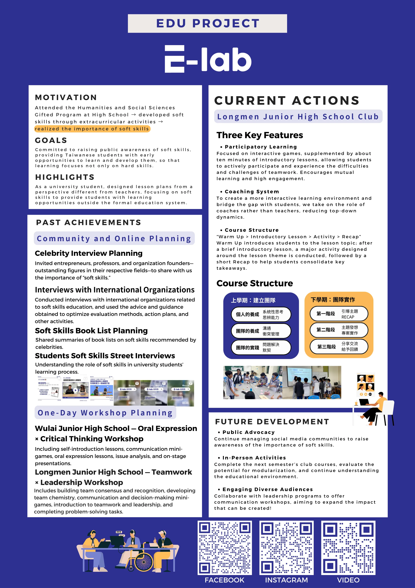
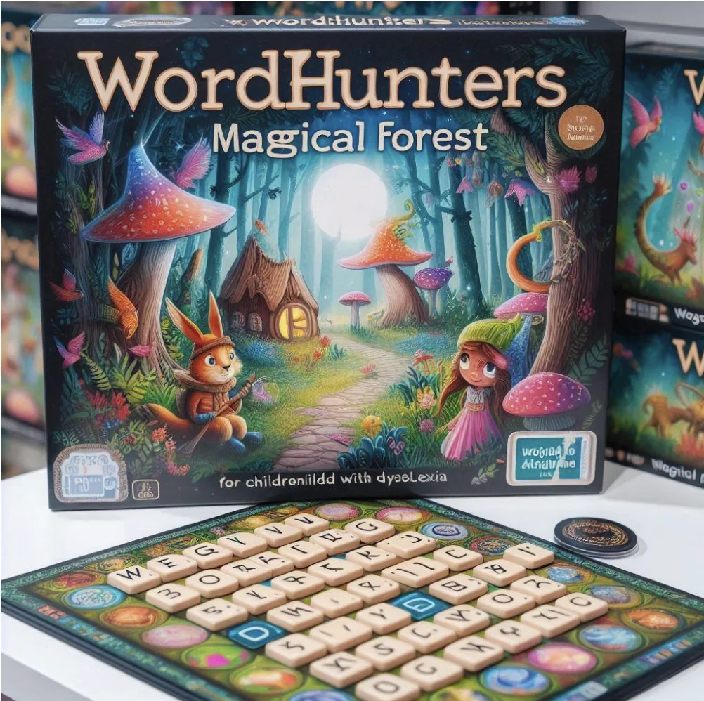

E-Lab
Co-founder & Director · Jun 2023 – Aug 2024
E-Lab is a social enterprise I co-founded to bridge the soft-skill gap in Taiwan's education system. While schools focus almost entirely on hard skills and exams, we built programs that give students early, structured opportunities to develop communication, collaboration, and critical thinking.
Dream Achiever Award
Recognized by Taiwan's Ministry of Education
US$10,000+
Funding secured to sustain and scale operations
0 → 1
From idea to running organization with a real team and real students
What I Did
As co-founder and director, I led the organization from concept to execution: strategic planning (defining our mission, target schools, and program design), resource allocation (budgeting the funding we raised across programs and operations), and project management (coordinating the team, partner schools, and program delivery).
Building E-Lab taught me what no classroom could — how to take an ambiguous problem, design a solution with limited resources, convince others to fund and join it, and iterate until it works. It's the same zero-to-one muscle I now bring to analytics work.

Related Educational Work

E-Lab was my first venture, not my last. As I move to New York for my MSBA at Columbia, I'm keeping the founder's mindset — and staying open to building again when the right problem finds me.